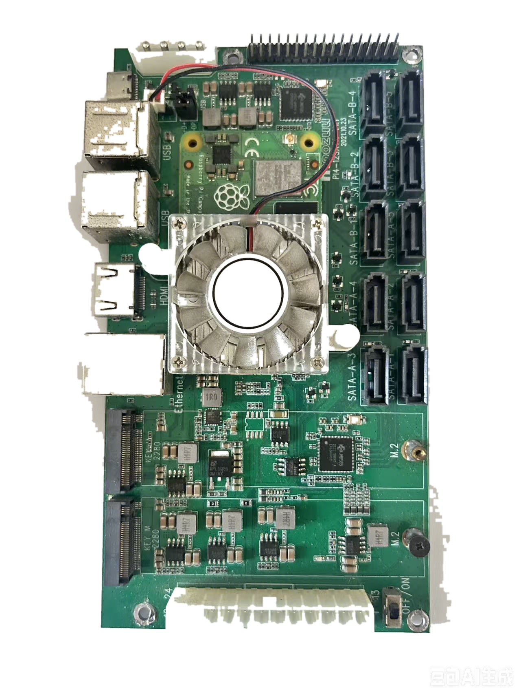
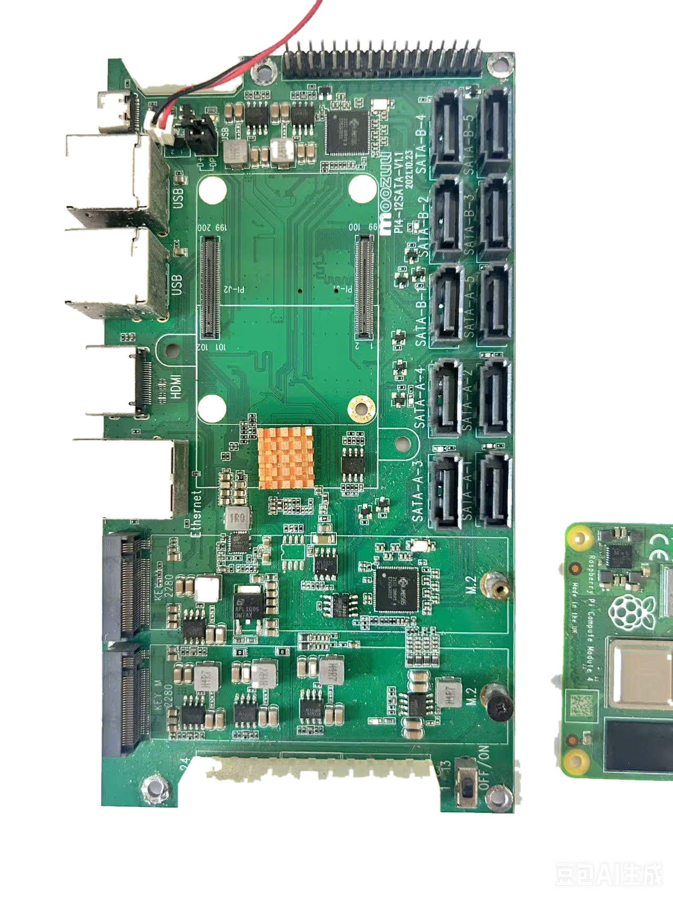
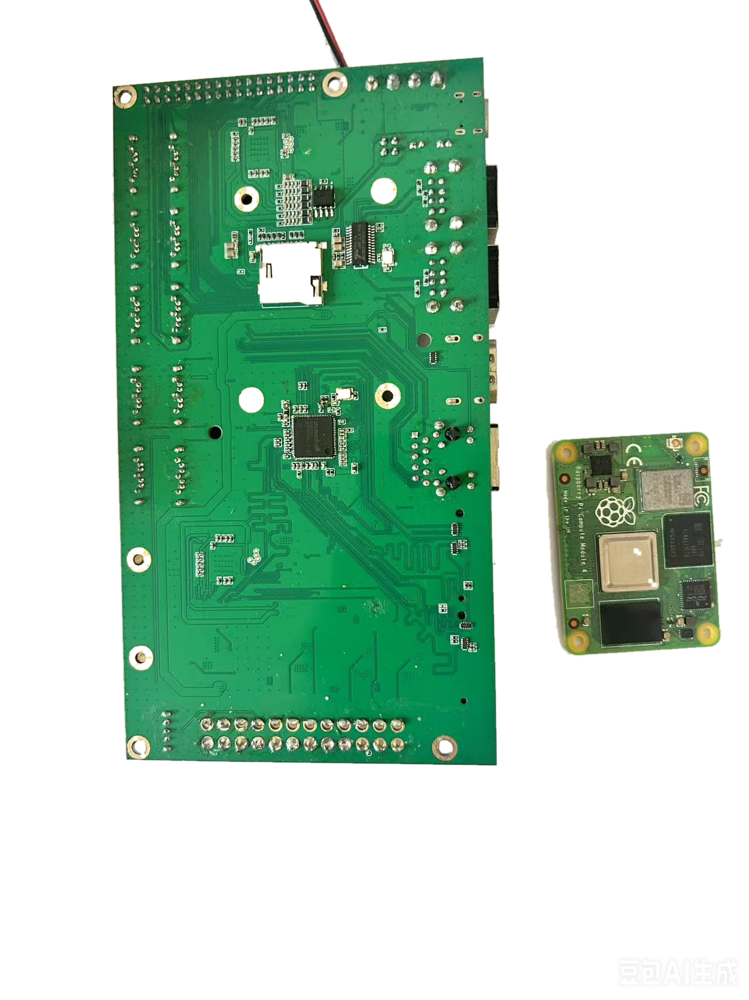
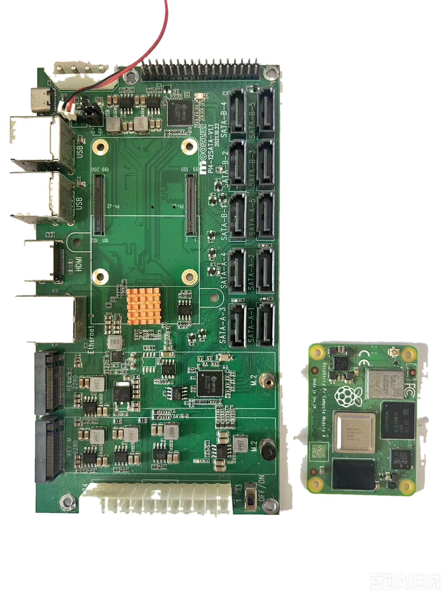

Twelve SATA drive ports
Twelve on-board SATA connectors support high-capacity multi-drive storage builds, NAS experiments, and home-server applications.
Validated Network Storage Hardware
An open-hardware 12-port SATA NAS board built around Raspberry Pi Compute Module 4. The assembled board has been produced and verified in operation.

Twelve on-board SATA connectors support high-capacity multi-drive storage builds, NAS experiments, and home-server applications.
Dual board-to-board connectors accept Raspberry Pi Compute Module 4 and place compute, storage connectivity, and system I/O on one carrier board.
The board exposes Ethernet, HDMI, USB, GPIO, and storage-related connections for setup, management, and peripheral integration.
Dedicated power conversion stages and high-current input connectors support the carrier board and attached storage hardware.
The completed build demonstrates a fan-cooled CM4 installation suitable for sustained storage and server workloads.
This is finished hardware rather than a render or early layout preview. Physical boards have been assembled and confirmed working.
Hardware Gallery



